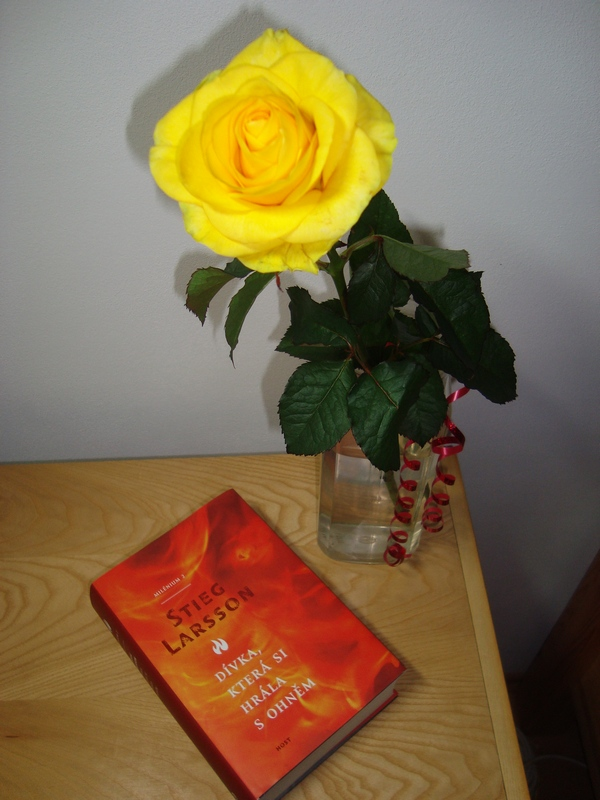

Ježíšek vyslyšel moje prosby a nadělil mi pod stromeček druhý díl “Milénia” - taky jsem loni sekala dobrotu, žejo O:-)! Už jsem Vám říkala, jak strašně zbožňuju tlusté knížky? Tak tento díl je ještě tlustší než ten první, což je báječné, protože mi taková kniha alespoň dlouho vydrží. Dívku jsem si (velmi nezodpovědně) rozečetla ve zkouškovém a pak jsem trpěla, když jsem se učila na náročné zkoušky z financí a ze správy a nesměla jsem se na ni ani podívat. Po dosažení posledního zeleného políčka v ISu už mě ale nic neudrželo. Dívka, která si hrála s ohněm je podle mě ještě mnohem napínavější než Muži, kteří nenávidí ženy a v tomto případě připouštím, že bylo opravdu těžké od ní odcházet. Ale já prostě nejsem ten typ, co zhltne knížku na posezení, a tak jsem ji dočetla teprve teď v únoru.
Krom Lisbeth Salanderové a Mikaela Blomkvista, našich starých známých z první knihy, se i v druhém díle Milénia vyrojí spousta nových postav a stačí chvilka nepozornosti a čtenář se přestává orientovat. Bohužel zde na rozdíl od prvního dílu chybí přehledné schémátko :D. Nicméně postavy děj posouvají zase trochu někam jinam, než by čtenář očekával na základě zkušeností z předchozí knihy, takže je to pro dobro věci. Trošku mimo mísu mi přišel snad jen vysloužilý boxer Paolo Roberto, jehož úloha v celém příběhu mi přišla poněkud přitažená za vlasy a hlavně stěží uvěřitelná. Takových neuvěřitelných momentů jsem při čtení zaznamenala víc, zejména v závěru knihy, nicméně požitek z četby mi nijak výrazně nenarušily. Postupné odhalování minulosti Lisbeth Salanderové, vazeb mezi jednotlivými postavami i okolností vražd v Enskede - to všechno mě udržovalo v neustálém napětí. Musím se přiznat, že souvislost mezi Lisbeth a Zalou jsem neprokoukla a myslela jsem si celou dobu, že hrál v jejím životě trochu jinou roli. Závěr, ve kterém se odkrývala všechna “rodinná pouta” mezi postavami, mi přišel docela legrační, když jsem ale otočila na poslední stránku, úsměv mi docela ztuhnul na rtech… otevřený konec??? WTF??? Otevřené konce bych zakázala, zvlášť v knížkách, ve kterých na ně naprosto nejste připravení!!! Nezbývá mi tedy nic jiného, než v červnu úspěšně odstátnicovat a pak se odměnit závěrečným dílem celé trilogie, abych zjistila, jak to všechno dopadne. Nečekané ukončení Dívky mě skutečně nadzvedlo ze židle, jinak má však Larssonův vypravěčský um ty správný grády a Dívka, která si hrála s ohněm je pro mě bestsellerem se vším všudy :-). Doporučuju všem!!

Zátiší s Larssonem a výroční růží :D
Jo, to jsem nikdy nechápala, jak můžeš odejít třeba od Harryho Pottera. :D
Máš recht, že místo to bylo přitažený za vlasy, ale nakonec to zvládl celý tak dobře, že to člověk přičetl požadavkům žánru. Je zajímavý pozorovat, kolik se najednou vyrojilo děl s touhle tematikou. Zdá se mi, že odstartoval vlnu zájmu o tenhle typ produkce.